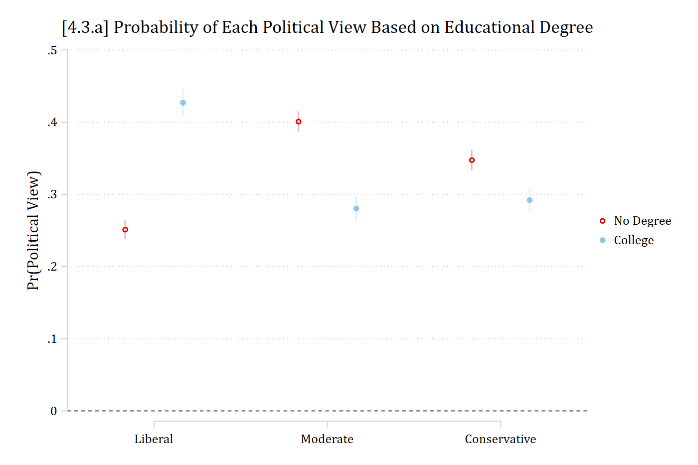
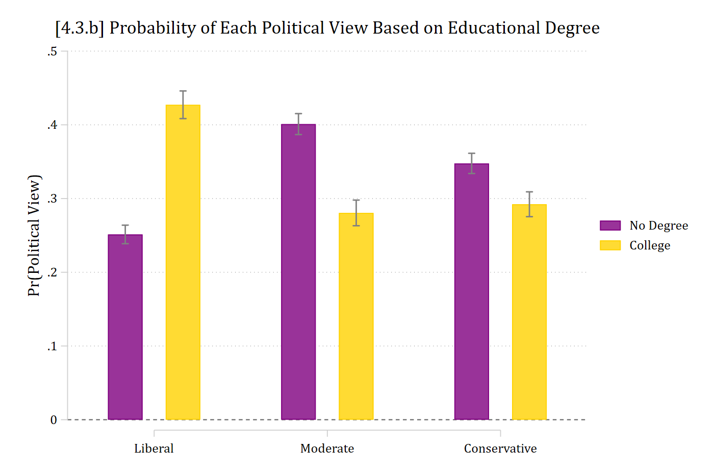
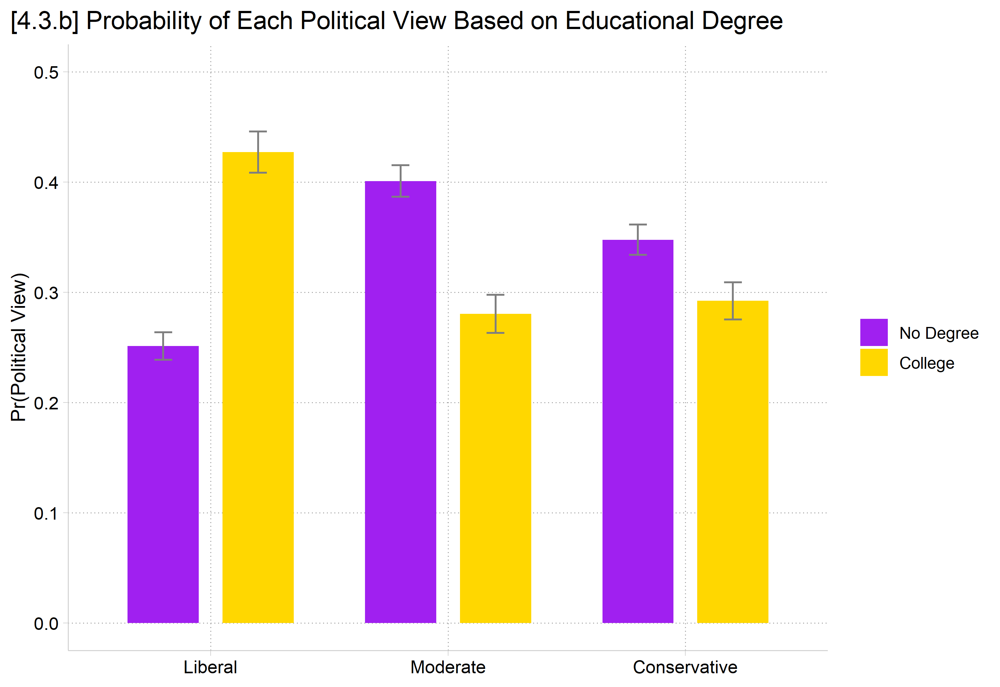
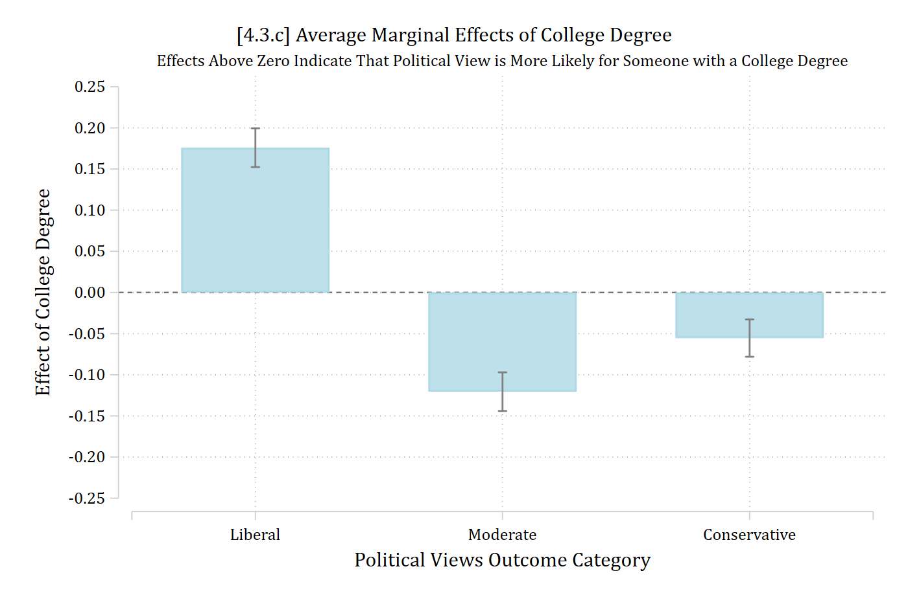
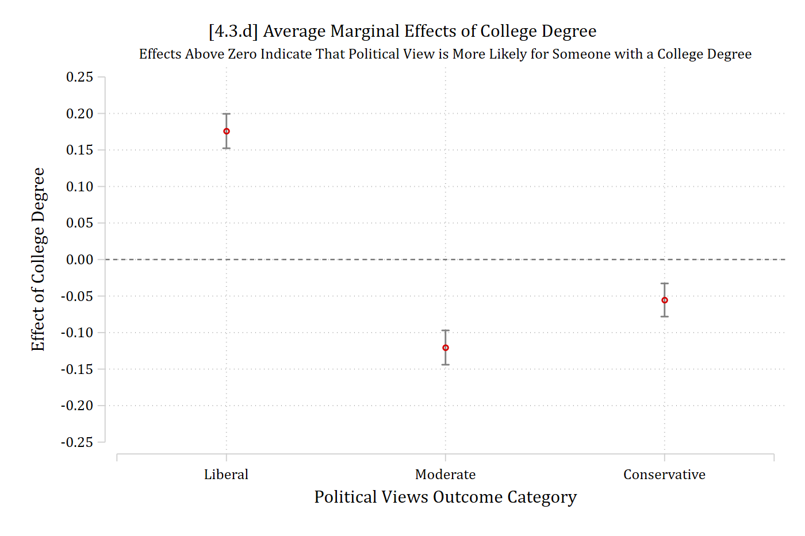
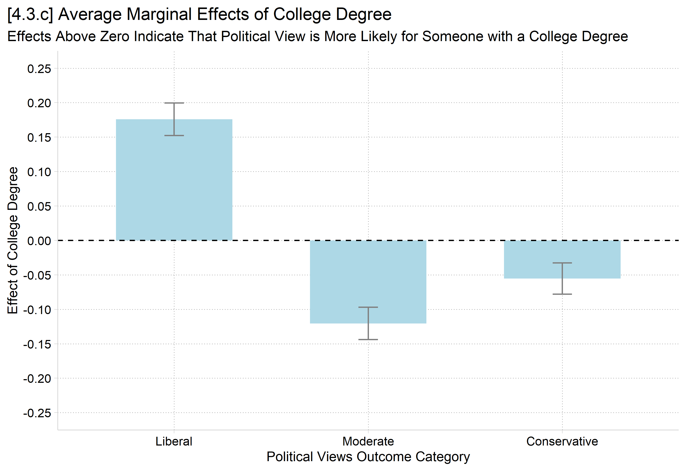
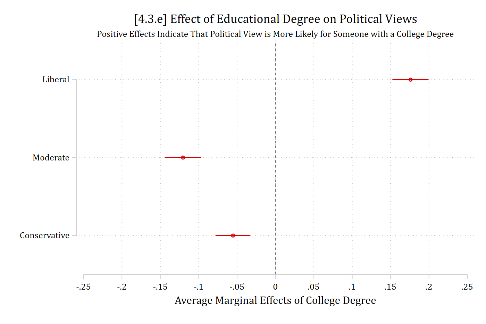
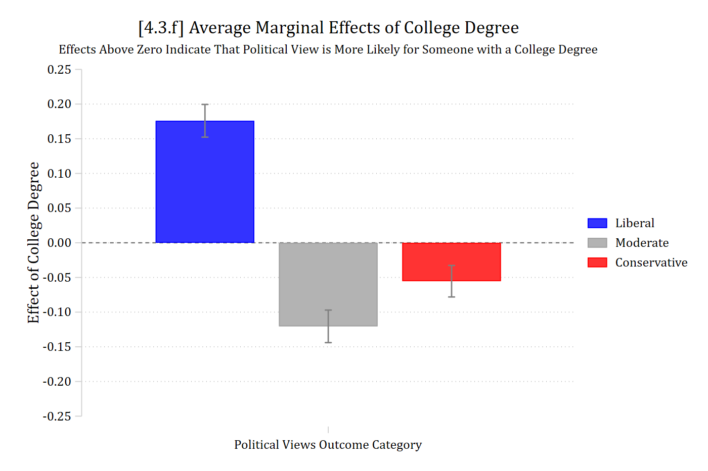
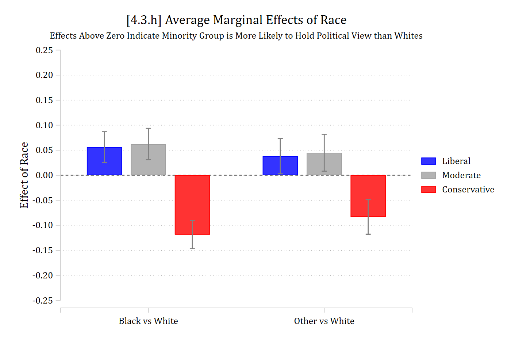

The interpretation of a marginal effect in multinomial logit is all but identical to the interpretation in binary logit/probit:
MEM: The difference in Pr(y = j | x) for a change in xk of δ, holding other control variables at their means
AME: On average, the difference in Pr(y = j | x) for a change in xk of δ
Here, we predict Pr(y = j), not Pr(y=1) as in the binary case
And have J total Pr(y = j), and thus J total MEs
Decisions about where to hold the control variables follow the same logic as before (at their mean for MEM; average over observed values for AME; etc.)
Decisions about the size of δ to use are the same
An instantaneous rate of change / slope (first derivative)
A finite change, AKA a discrete change
Can be any amount, e.g. one unit, SD, etc.
I find discrete changes most useful
Marginal effects at the mean (MEM)
Formulas for MEMs and AMEs are identical to before in linear and binary models. Only the formula for \(\eta\) has changed (we use the formulas above)
For the MEM, we hold the control variables (\(\mathbf{x}_{-k}\)) at their means (\(\overline{\mathbf{x}}\))
Because control variables were held at the sample means, can interpret MEM as effect “for the average person” in the data or someone “average on all other variables included in the model”
Average marginal effects (AMEs)
For an AME, we first compute a marginal effect for each observation in the data with the control variables held at their observed values for that specific observation (\(\mathbf{x}_{-k,i}\)):
library(haven) # import Stata data and labelslibrary(dplyr) # data manipulationlibrary(ggplot2) # graphslibrary(nnet) # multinomial logit: multinom()library(marginaleffects) # predictions and marginal effectslibrary(cleanplots) # graph schemecleanplots_defaults()source("https://raw.githubusercontent.com/tdmize/Rfunctions/main/ME_helper_functions.R")# Center changes in continuous IVs on each observation's valueoptions(marginaleffects_contrast_direction ="center")gss <-read_dta("https://tdmize.github.io/data/data/cda_gss.dta")gss <- gss |>filter(year >=2016& year <=2021)# Keep model variables; drop any missing datagss <- gss[c("polviews3", "age", "woman", "race3", "college", "married", "parent","faminc", "employed", "conserv")]gss <- gss[complete.cases(gss[c("conserv", "age", "woman", "race3", "college","married", "parent", "faminc")]), ]# Treat binary/nominal variables as factorsgss <- gss |>mutate(across(c(polviews3, woman, race3, college, married, parent, employed), as_factor)) |>droplevels()# 3 category political views varpol3mod <-multinom(polviews3 ~ age + woman + race3 + college + married + parent + faminc + employed, data = gss, trace =FALSE)# AMEs +SD of ageavg_comparisons(pol3mod, variables =list(age =sd(gss$age)))
Group Estimate Std. Error z Pr(>|z|) S 2.5 % 97.5 %
Liberal -0.0196 0.00596 -3.29 0.00102 9.9 -0.0313 -0.0079
Moderate -0.0294 0.00618 -4.75 < 0.001 18.9 -0.0415 -0.0173
Conservative 0.0489 0.00606 8.08 < 0.001 50.4 0.0371 0.0608
Term: age
Type: probs
Comparison: +17.3603297947298
On average, a standard deviation increase in age (about 17 years) is associated with a 0.049 higher probability of identifying as conservative. A standard deviation increase in age, in contrast, leads to a 0.029 lower probability of identifying as moderate and a 0.020 lower probability of identifying as liberal
// AMEs of binary/nominal IVs //mecompare college, model(pol3mod)
Predicting: Pr(polviews3)
Marginal effects (N_pol3mod=7823)
| ME # Estimate SE P>|z|
---------------------------------+---------------------------------------
college |
College Deg - No Col Deg |
Liberal - pol3mod | 1 0.176 0.012 0.000
Moderate - pol3mod | 2 -0.120 0.012 0.000
Conservative - pol3mod | 3 -0.055 0.012 0.000
# AMEs of binary/nominal IVsavg_comparisons(pol3mod, variables ="college")
Group Estimate Std. Error z Pr(>|z|) S 2.5 % 97.5 %
Liberal 0.1759 0.0120 14.63 <0.001 158.7 0.1523 0.1995
Moderate -0.1205 0.0120 -10.06 <0.001 76.7 -0.1440 -0.0970
Conservative -0.0554 0.0116 -4.78 <0.001 19.2 -0.0781 -0.0327
Term: college
Type: probs
Comparison: College Degree - No Col Degree
Those with college degrees have a 0.176 higher probability of identifying as liberal (compared to those without college degrees). In contrast, college educated individuals are less likely to identify as moderate or conservative (\({ME}_{moderate} = -0.120;\ {ME}_{conservative} = -0.055\)).
Interpretation tip: A separate sentence for each ME can be tedious. I often use the strategy of grouping effects in the same direction into one sentence. At most, you would then need three sentences: one for positive effects, one for null effects, and one for negative effects.
Plots of binary/nominal IVs
For binary/nominal IVs, you only sometimes need a plot. It depends on how complicated the patterns are and how many categories you have of your IV and your DV
All else equal, the more categories of the IV and/or the DV makes it more likely you will need a plot
Often helpful to make the plot to guide your interpretations even if the plot does not make it into the final article
One option for binary/nominal IVs is to plot each set of predictions
Pro: These are intuitive to understand
Con: These do not explicitly show the test of an effect of the focal IV
eststore col1coefplot col0 col1, ///yline(0) ylab(0(.1).5) vertical ciopts(color(*.3)) /// xlab(1 "Liberal" 2 "Moderate" 3 "Conservative") ///legend(order(2 "No Degree" 4 "College")) ///ytitle("Pr(Political View)") ///title("[4.3.a] Probability of Each Political View Based on Educational Degree")

In R, use plot_predictions, the facet_wrap function, and include “group” in the by function for a fairly nice dot plot
Make sure to specify the counterfactual grid_type in newdata for average predictions, rather than predictions for modal person
# 4.3.a - Show pr() of each group; dot plotplot_predictions(pol3mod, by =c("college", "group"),newdata =datagrid(college = unique, grid_type ="counterfactual")) +facet_wrap(~ group) +scale_y_continuous(breaks =seq(0, .5, .1), limits =c(0, .5)) +labs(title ="[4.3.a] Probability of Each Political View Based on Educational Degree",x =NULL, y ="Pr(Political View)") +theme(plot.title.position ="plot", legend.position ="none")
*4.3.b - Make a bar chart instead ofdefaultdot plotcoefplot (col0, color(purple)) (col1, color(gold)), ///recast(bar) barw(0.2) vertical yline(0) ylab(0(.1).5) /// ciopts(recast(rcap) color(gs8)) citop /// xlab(1 "Liberal" 2 "Moderate" 3 "Conservative") ///legend(order(1 "No Degree" 3 "College")) ///ytitle("Pr(Political View)") ///title("[4.3.b] Probability of Each Political View Based on Educational Degree")

# 4.3.b - Make a bar chart instead of a dot plotpr_college <-avg_predictions(pol3mod, by =c("college", "group"),newdata =datagrid(college = unique, grid_type ="counterfactual"))ggplot(pr_college, aes(x = group, y = estimate, fill = college)) +geom_col(position =position_dodge(width = .8), width = .6) +geom_errorbar(aes(ymin = conf.low, ymax = conf.high),position =position_dodge(width = .8), width = .15, color ="gray50") +scale_fill_manual(values =c("purple", "gold"), labels =c("No Degree", "College")) +scale_y_continuous(breaks =seq(0, .5, .1), limits =c(0, .5)) +labs(title ="[4.3.b] Probability of Each Political View Based on Educational Degree",x =NULL, y ="Pr(Political View)", fill =NULL) +theme(plot.title.position ="plot")

Plots of marginal effects for binary IVs
An alternative to plotting the predictions for each category of a binary/nominal IV is to plot the marginal effect for that variable (e.g., college: 1 vs 0)
Note this is the difference between each set of two bars above
Pro: Half as many bars to plot; has information on significance test of the effect
Con: Less intuitive to readers—needs more explanation
Make sure to always include a subtitle( ) or a note( ) on these plots to help readers interpret the direction of the effects
In Stata, estimate MEs using margins, dydx( ) and then plot with marginsplot
Works well as dot plot or bar chart
*4.3.c - plot of MEs for binary IVestrestore pol3mod
(results pol3mod are active now)
margins, dydx(college)
Average marginal effects Number of obs = 7,823
Model VCE: OIM
dy/dx wrt: 1.college
1._predict: Pr(polviews3==Liberal), predict(pr outcome(1))
2._predict: Pr(polviews3==Moderate), predict(pr outcome(2))
3._predict: Pr(polviews3==Conservative), predict(pr outcome(3))
------------------------------------------------------------------------------
| Delta-method
| dy/dx std. err. z P>|z| [95% conf. interval]
-------------+----------------------------------------------------------------
0.college | (base outcome)
-------------+----------------------------------------------------------------
1.college |
_predict |
1 | 0.176 0.012 14.634 0.000 0.152 0.199
2 | -0.120 0.012 -10.061 0.000 -0.144 -0.097
3 | -0.055 0.012 -4.784 0.000 -0.078 -0.033
------------------------------------------------------------------------------
Note: dy/dx for factor levels is the discrete change from the base level.
*Nicer bar chart with optionsmarginsplot, recast(bar) ciopts(color(gs8)) /// xlab(0.5 " " 1 "Liberal" 2 "Moderate" 3 "Conservative" 3.5 " ") ///yline(0) plotopts(barw(0.6) color(ltblue)) ylab(-.25(.05).25, format(%4.2f)) ///xtitle("Political Views Outcome Category") ytitle("Effect of College Degree") ///title("[4.3.c] Average Marginal Effects of College Degree") ///subtitle("Effects Above Zero Indicate That Political View is More Likely for Someone with a College Degree", size(small))
Variables that uniquely identify margins:

*4.3.d - Scatterplot versionqui margins, dydx(college)marginsplot, recast(scatter) ciopts(color(gs8)) /// xlab(0.5 " " 1 "Liberal" 2 "Moderate" 3 "Conservative" 3.5 " ") ///yline(0) ylab(-.25(.05).25, format(%4.2f)) ///xtitle("Political Views Outcome Category") ytitle("Effect of College Degree") ///title("[4.3.d] Average Marginal Effects of College Degree") ///subtitle("Effects Above Zero Indicate That Political View is More Likely for Someone with a College Degree", size(small))
Variables that uniquely identify margins:

In R, use plot_comparisons and include “group” in the by function for a fairly nice dot plot
Add geom_hline(yintercept = 0) to easily see where a null effect is
# 4.3.c - plot of MEs for binary IV: bar chartme_college <-avg_comparisons(pol3mod, variables ="college")ggplot(me_college, aes(x = group, y = estimate)) +geom_col(width = .6, fill ="lightblue") +geom_errorbar(aes(ymin = conf.low, ymax = conf.high), width = .1, color ="gray50") +geom_hline(yintercept =0, linetype ="dashed") +scale_y_continuous(breaks =seq(-.25, .25, .05), limits =c(-.25, .25)) +labs(title ="[4.3.c] Average Marginal Effects of College Degree",subtitle ="Effects Above Zero Indicate That Political View is More Likely for Someone with a College Degree",x ="Political Views Outcome Category", y ="Effect of College Degree") +theme(plot.title.position ="plot")

# 4.3.d - dot plot versionplot_comparisons(pol3mod, variables ="college", by ="group") +geom_hline(yintercept =0, linetype ="dashed") +scale_y_continuous(breaks =seq(-.25, .25, .05), limits =c(-.25, .25)) +labs(title ="[4.3.d] Average Marginal Effects of College Degree",subtitle ="Effects Above Zero Indicate That Political View is More Likely for Someone with a College Degree",x ="Political Views Outcome Category", y ="Effect of College Degree") +theme(plot.title.position ="plot")
*4.3.e - Invert x and y-axis using coefplotestrestore pol3mod
(results pol3mod are active now)
qui margins, dydx(college) post// need to post predictionscoefplot, ylab(1 "Liberal" 2 "Moderate" 3 "Conservative") xline(0) /// xlab(-.25(.05).25) xtitle("Average Marginal Effects of College Degree") ///title("[4.3.e] Effect of Educational Degree on Political Views") ///subtitle("Positive Effects Indicate That Political View is More Likely for Someone with a College Degree", size(small))

# 4.3.e - Invert x and y-axisplot_comparisons(pol3mod, variables ="college", by ="group") +geom_hline(yintercept =0, linetype ="dashed") +scale_x_discrete(limits = rev) +scale_y_continuous(breaks =seq(-.25, .25, .05), limits =c(-.25, .25)) +coord_flip() +labs(title ="[4.3.e] Effect of Educational Degree on Political Views",subtitle ="Positive Effects Indicate That Political View is More Likely for Someone with a College Degree",x =NULL, y ="Average Marginal Effects of College Degree") +theme(plot.title.position ="plot")
*4.3.f - Nice bar chart with different colors for polviews categoriesestrestore pol3mod
(results pol3mod are active now)
margins, dydx(college) predict(outcome(1)) post
Average marginal effects Number of obs = 7,823
Model VCE: OIM
Expression: Pr(polviews3==Liberal), predict(outcome(1))
dy/dx wrt: 1.college
-------------------------------------------------------------------------------
| Delta-method
| dy/dx std. err. z P>|z| [95% conf. interval]
--------------+----------------------------------------------------------------
college |
College De.. | 0.176 0.012 14.634 0.000 0.152 0.199
-------------------------------------------------------------------------------
Note: dy/dx for factor levels is the discrete change from the base level.
eststore colme1estrestore pol3mod
(results pol3mod are active now)
margins, dydx(college) predict(outcome(2)) post
Average marginal effects Number of obs = 7,823
Model VCE: OIM
Expression: Pr(polviews3==Moderate), predict(outcome(2))
dy/dx wrt: 1.college
-------------------------------------------------------------------------------
| Delta-method
| dy/dx std. err. z P>|z| [95% conf. interval]
--------------+----------------------------------------------------------------
college |
College De.. | -0.120 0.012 -10.061 0.000 -0.144 -0.097
-------------------------------------------------------------------------------
Note: dy/dx for factor levels is the discrete change from the base level.
eststore colme2estrestore pol3mod
(results pol3mod are active now)
margins, dydx(college) predict(outcome(3)) post
Average marginal effects Number of obs = 7,823
Model VCE: OIM
Expression: Pr(polviews3==Conservative), predict(outcome(3))
dy/dx wrt: 1.college
-------------------------------------------------------------------------------
| Delta-method
| dy/dx std. err. z P>|z| [95% conf. interval]
--------------+----------------------------------------------------------------
college |
College De.. | -0.055 0.012 -4.784 0.000 -0.078 -0.033
-------------------------------------------------------------------------------
Note: dy/dx for factor levels is the discrete change from the base level.
eststore colme3coefplot (colme1, color(blue)) (colme2, color(gs10)) (colme3, color(red)), ///recast(bar) barw(0.2) vertical yline(0) ylab(-.25(.05).25, format(%4.2f)) /// ciopts(recast(rcap) color(gs8)) citop ///legend(order(1 "Liberal" 3 "Moderate" 5 "Conservative")) ///ytitle("Effect of College Degree") xlab(1 "Political Views Outcome Category") ///title("[4.3.f] Average Marginal Effects of College Degree") ///subtitle("Effects Above Zero Indicate That Political View is More Likely for Someone with a College Degree", size(small))

# 4.3.f - Nice bar chart with different colors for polviews categoriesggplot(me_college, aes(x = group, y = estimate, fill = group)) +geom_col(width = .6) +geom_errorbar(aes(ymin = conf.low, ymax = conf.high), width = .1, color ="gray50") +geom_hline(yintercept =0, linetype ="dashed") +scale_fill_manual(values =c("blue", "gray70", "red")) +scale_y_continuous(breaks =seq(-.25, .25, .05), limits =c(-.25, .25)) +labs(title ="[4.3.f] Average Marginal Effects of College Degree",subtitle ="Effects Above Zero Indicate That Political View is More Likely for Someone with a College Degree",x ="Political Views Outcome Category", y ="Effect of College Degree", fill =NULL) +theme(plot.title.position ="plot", axis.text.x =element_blank())
*4.3.h - Effects multi-category nominal IV (race)estrestore pol3mod
(results pol3mod are active now)
margins, dydx(race3) predict(outcome(1)) post
Average marginal effects Number of obs = 7,823
Model VCE: OIM
Expression: Pr(polviews3==Liberal), predict(outcome(1))
dy/dx wrt: 2.race3 3.race3
------------------------------------------------------------------------------
| Delta-method
| dy/dx std. err. z P>|z| [95% conf. interval]
-------------+----------------------------------------------------------------
race3 |
black | 0.056 0.016 3.581 0.000 0.025 0.087
other | 0.038 0.018 2.116 0.034 0.003 0.074
------------------------------------------------------------------------------
Note: dy/dx for factor levels is the discrete change from the base level.
eststore raceme1estrestore pol3mod
(results pol3mod are active now)
margins, dydx(race3) predict(outcome(2)) post
Average marginal effects Number of obs = 7,823
Model VCE: OIM
Expression: Pr(polviews3==Moderate), predict(outcome(2))
dy/dx wrt: 2.race3 3.race3
------------------------------------------------------------------------------
| Delta-method
| dy/dx std. err. z P>|z| [95% conf. interval]
-------------+----------------------------------------------------------------
race3 |
black | 0.062 0.016 3.905 0.000 0.031 0.094
other | 0.045 0.019 2.391 0.017 0.008 0.082
------------------------------------------------------------------------------
Note: dy/dx for factor levels is the discrete change from the base level.
eststore raceme2estrestore pol3mod
(results pol3mod are active now)
margins, dydx(race3) predict(outcome(3)) post
Average marginal effects Number of obs = 7,823
Model VCE: OIM
Expression: Pr(polviews3==Conservative), predict(outcome(3))
dy/dx wrt: 2.race3 3.race3
------------------------------------------------------------------------------
| Delta-method
| dy/dx std. err. z P>|z| [95% conf. interval]
-------------+----------------------------------------------------------------
race3 |
black | -0.119 0.014 -8.228 0.000 -0.147 -0.090
other | -0.083 0.018 -4.728 0.000 -0.118 -0.049
------------------------------------------------------------------------------
Note: dy/dx for factor levels is the discrete change from the base level.
eststore raceme3coefplot (raceme1, color(blue)) (raceme2, color(gs10)) (raceme3, color(red)), ///recast(bar) barw(0.2) vertical yline(0) ylab(-.25(.05).25, format(%4.2f)) /// ciopts(recast(rcap) color(gs8)) citop ///legend(order(1 "Liberal" 3 "Moderate" 5 "Conservative")) ///ytitle("Effect of Race") xlab(0.5 " " 1 "Black vs White" 2 "Other vs White" 2.5 " ") ///title("[4.3.h] Average Marginal Effects of Race") ///subtitle("Effects Above Zero Indicate Minority Group is More Likely to Hold Political View than Whites", size(small))

# 4.3.h - Effects multi-category nominal IV (race)me_race <-avg_comparisons(pol3mod, variables ="race3")ggplot(me_race, aes(x = contrast, y = estimate, fill = group)) +geom_col(position =position_dodge(width = .8), width = .7) +geom_errorbar(aes(ymin = conf.low, ymax = conf.high),position =position_dodge(width = .8), width = .15, color ="gray50") +geom_hline(yintercept =0, linetype ="dashed") +scale_x_discrete(labels =c("Black vs White", "Other vs White")) +scale_fill_manual(values =c("blue", "gray70", "red")) +scale_y_continuous(breaks =seq(-.25, .25, .05), limits =c(-.25, .25)) +labs(title ="[4.3.h] Average Marginal Effects of Race",subtitle ="Effects Above Zero Indicate Minority Group is More Likely to Hold Political View than Whites",x =NULL, y ="Effect of Race", fill =NULL) +theme(plot.title.position ="plot")
Group Contrast Estimate Std. Error z Pr(>|z|) S 2.5 % 97.5 %
Liberal black - white 0.0562 0.0157 3.58 <0.001 11.5 0.02543 0.0869
Liberal other - black -0.0180 0.0222 -0.81 0.4181 1.3 -0.06150 0.0255
Liberal other - white 0.0382 0.0180 2.12 0.0344 4.9 0.00281 0.0736
Moderate black - white 0.0624 0.0160 3.91 <0.001 13.4 0.03107 0.0937
Moderate other - black -0.0174 0.0228 -0.76 0.4471 1.2 -0.06210 0.0274
Moderate other - white 0.0450 0.0188 2.39 0.0168 5.9 0.00812 0.0819
Conservative black - white -0.1185 0.0144 -8.23 <0.001 52.2 -0.14677 -0.0903
Conservative other - black 0.0353 0.0208 1.70 0.0897 3.5 -0.00548 0.0761
Conservative other - white -0.0832 0.0176 -4.73 <0.001 18.8 -0.11769 -0.0487
Term: race3
Type: probs
Black adults are significantly more likely to hold liberal or moderate political views, compared to White adults (both differences about 0.06). In contrast, Black adults have about a 0.12 lower probability of holding conservative political views than do White adults.
Etc…
ME inequality for nominal IVs
Combining nominal or ordinal IVs with nominal or ordinal outcomes presents a challenge of an overwhelming number of predictions and marginal effects to examine
The # of MEs for nominal/ordinal IVs in nominal/ordinal DV models = the # of outcome categories * the # of pairwise comparisons of the nominal/ordinal IV
For a nominal independent variable with L categories and a nominal or ordinal outcome with \(\Lambda\) outcome categories
\[\#\ of\ MEs = \Lambda * \frac{L(L - 1)}{2}\]
One solution, simplify down to the ME inequality per outcome category \(\lambda\) (Mize and Han 2025)
In R, use the hypothesis option of avg_comparisons
me_ineq <-avg_comparisons(pol3mod, variables =list(race3 ="pairwise"),hypothesis =meineq(pol3mod))# Pr(Conservative) ME inequality - Pr(Liberal) ME inequalityhypotheses(me_ineq, hypothesis ="b3 - b1 = 0")
Hypothesis Estimate Std. Error z Pr(>|z|) S 2.5 % 97.5 %
b3-b1=0 0.0496 0.0115 4.3 <0.001 15.8 0.027 0.0722
Racial-ethnic groups differ more in their identification as conservative than in their identification as liberal
Total marginal effects
With a linear or binary outcome, a single ME summarizes the total effect of a continuous or binary IV
Mize and Han (2025) suggest that similar logic can be applied in nominal and ordinal outcome models by aggregating the effect of a single IV across each outcome category
That is, an IV’s total effect is its holistic effect across all outcomes
Then, the total ME statistic is simply the sum of all the marginal effects for that IV (using absolute values) divided by two*
“The total ME represents the proportion of observations that are predicted to change outcomes given a change in the independent variable. Put another way, this represents the complete effect of the independent variable across all outcome categories.” (Mize and Han 2025)
*The total ME is divided by two to account for the fact that MEs in multi-outcome models are symmetric/zero-sum.
In Stata, use the totalme command or the totalme option of mecompare
*continuous and binary IVstotalme college age, amount(trimrange) model(pol3mod)
Total ME Estimates (N = 7823)
| Estimate Std. err. z P>|z|
-------------------------+-----------------------------------------------
college |
College De vs No Col Deg | 0.176 0.012 14.634 0.000
-------------------------+-----------------------------------------------
age |
p5 to p95 | 0.157 0.020 8.017 0.000
Term Estimate Std. Error z Pr(>|z|) S 2.5 % 97.5 %
age 0.157 0.0195 8.02 <0.001 49.7 0.118 0.195
college 0.176 0.0120 14.63 <0.001 158.7 0.152 0.199
Type: probs
Those with and without college degrees differ by about 18 percentage points in their political views
Across the range of age, political views differ by about 16 total percentage points
Total marginal effect inequality statistics
We can combine the ME inequality approach to summarizing nominal and ordinal IV effects with the total ME approach developed in the prior section to obtain a single summary measure
In this case, the total ME inequality for a nominal or ordinal IV is simply the sum of the \({ME\ inequality}_{\lambda}\) measures divided by two.
*nominal IV gives the total ME inequalitytotalme race3, model(pol3mod)
Total ME Estimates (N = 7823)
| Estimate Std. err. z P>|z|
-------------------------+-----------------------------------------------
race3 |
total ME Ineq. | 0.094 0.011 8.822 0.000
# nominal IV gives the total ME inequalityavg_comparisons(pol3mod, variables =list(race3 ="pairwise"),hypothesis =totalme(pol3mod))